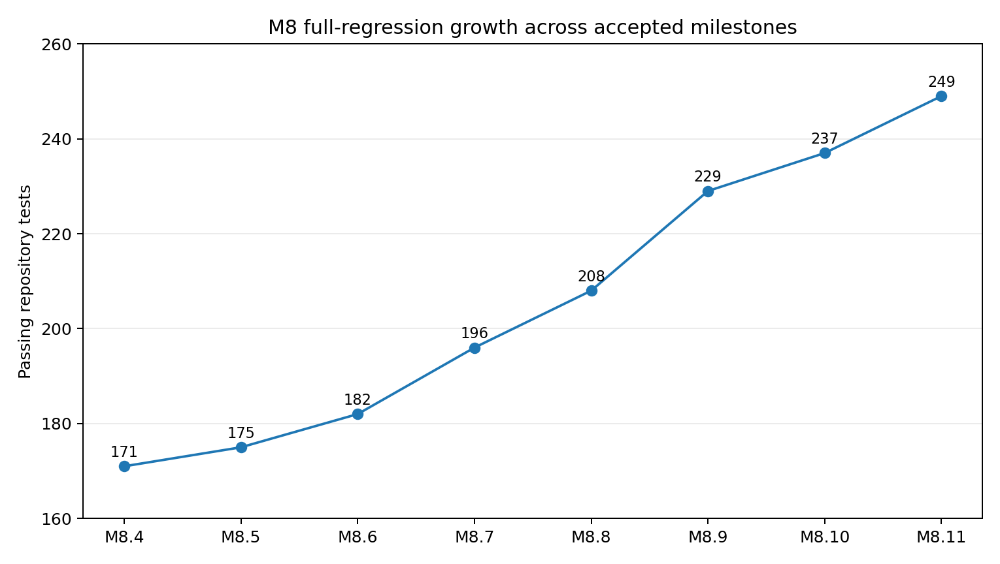
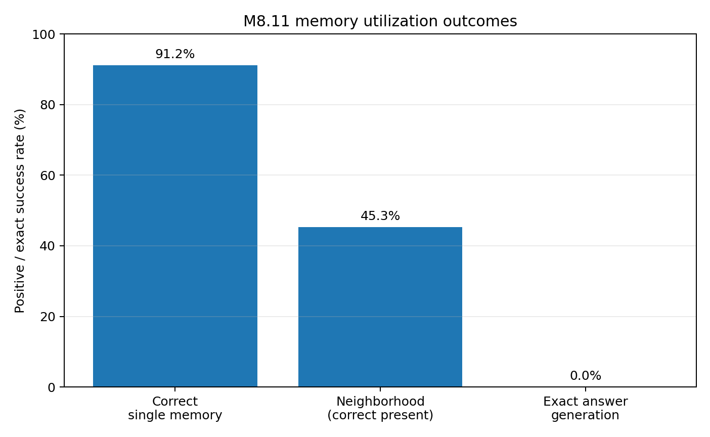
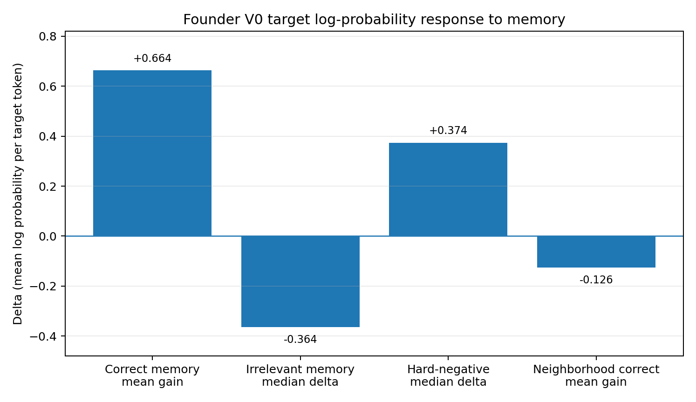

Stark M8: Durable Neural State, Exact Evidence, Consolidation, Multi-Memory Recall, and Causal Founder Integration
- Project Stark Research Paper — Public Edition
- Date: 9 September 2026
- Status: M8 research complete; promoted with an explicit integration boundary
- Publication note: Internal paths, machine identifiers, artifact hashes, and operational filenames are intentionally omitted.
Abstract
Stark M8 investigated whether a small frozen language model could acquire durable factual memory through a separate native neural memory organ rather than by modifying the language model's parameters. The control model, Stark Founder V0, is an 11.54M-parameter, eight-layer autoregressive Transformer with a 1,024-token physical attention window and a frozen content-addressed identity. M8 introduced Semantic Fact Memory 1 (SFM-1), a 196,608-parameter neural cell with a separate 2,048-slot persistent key/value state, conservative abstaining retrieval, an independently content-addressed exact-memory substrate, governed offline consolidation, deterministic multi-memory retrieval (SFM-T), and a typed Global Workspace integration boundary.
The experiments establish several distinct results. First, SFM-1 acquired 16 controlled stable facts from 64 compatible exposures without gradient training and with Founder V0 unchanged. Second, frozen retrieval correctly selected all 16 known facts, rejected all 516 negative/unknown probes, and classified all four controlled ambiguities. Third, the exact-memory substrate preserved 16/16 exact values, passed a 10/10 torture fixture including Unicode values, localized corruption, rebuilt a missing index to the same trusted root, and rejected unindexed injection. Fourth, offline consolidation advanced the semantic-memory generation from 64 to 80 using no new evidence, no reinforcement, and no gradients while preserving the discrete retrieval outcomes exactly. Fifth, SFM-T exposed multiple related or conflicting memories without deciding which was true or applicable. Sixth, M8.10 demonstrated causal integration: verified memory changed Founder V0's next-token distribution on 16/16 known probes, with positive target-log-probability gain on 14/16, while canonical memory and Founder remained byte-identical. Finally, a 512-case M8.11 utilization study found correct single-memory context improved the target distribution in 467/512 cases (91.21%, mean gain +0.663695), but irrelevant memory caused median degradation of -0.363696, neighborhood memory was negative on average (-0.126051), and exact answer generation remained 0/64.
The resulting claim is deliberately bounded. M8 establishes a promoted Stark semantic-memory architecture: SFM-1, exact evidence, SFM-T retrieval breadth, and typed workspace memory contracts. It does not establish reliable memory-to-answer cognition. The FounderV0CompatibilityBridge v1 is therefore frozen as a research baseline, not promoted as Stark's final cognitive interface. The principal bottleneck has moved from durable factual storage and retrieval to selective memory interpretation and cognition.
Keywords: semantic memory, neural memory, exact memory, continual learning, abstaining retrieval, memory consolidation, multi-memory recall, small language model, cognitive architecture, Stark
1. Introduction
Stark is being developed as a modular digital-being research architecture in which language, memory, state, cognition, and action can evolve as separable mechanisms. Founder V0 was intentionally frozen before M8 so that memory experiments could be evaluated against a stable neural language substrate rather than being confounded by continued language-model training.
The original M8 research question was:
Can Stark acquire durable, semantically retrievable long-lived factual knowledge by adding a native neural brain cell while Stark Founder V0 remains byte-identical?
This question imposed a stronger requirement than attaching a conventional retrieval database to a prompt. The project sought a native memory component with its own learned neural machinery and durable neural state, while simultaneously preserving exact factual payloads and provenance outside lossy neural representations.
Three architectural separations became central:
- Memory machinery vs. remembered knowledge. SFM-1 core weights specify how semantic memory operates; persistent neural state specifies what it currently knows.
- Semantic association vs. exact factual evidence. Approximate neural memory selects a fact identity; exact payload and provenance are resolved from an independently integrity-bound substrate.
- Memory vs. thinking. SFM may store, associate, activate, rank, retrieve, and preserve memories. It does not decide which memory is true, applicable, current, or actionable.
M8 was therefore not a single model-training experiment. It was a staged architectural program from contract design through acquisition, exactness, consolidation, multi-memory recall, integration, and utilization characterization.

2. Frozen Control: Stark Founder V0
Founder V0 remained immutable throughout M8.
| Property | Frozen value |
|---|---|
| Architecture | 8-layer causal Transformer |
| Parameters | 11,538,688 |
| Model width | 256 |
| Attention heads | 4 |
| Physical attention window | 1,024 tokens |
| Held-out M7 loss | 3.893164976578794 |
| Model identity | Frozen and independently verified |
Founder V0 was deliberately weak in several capabilities. M7 reported 40% on a 10-question reasoning baseline, 25% on an 8-question stable-knowledge baseline, and chance-like exact context recall. These limitations made it a useful control: M8 could test whether a new memory organ contributed measurable capability without silently upgrading Founder itself.
3. SFM-1 Architecture
3.1 Cell core and persistent knowledge state
SFM-1 was defined as a peer brain component rather than an adapter inserted into Founder blocks.
The frozen cell core contains three bias-free 256-to-256 projections:
- query projection;
- key projection;
- value projection.
This yields 196,608 trainable core parameters, approximately 1.704% of Founder V0's parameter count.
Persistent memory is separate from those parameters. The initial bank contains:
- 2,048 explicit slots;
- a 256-dimensional key per slot;
- a 256-dimensional value per slot.
The 2,048-slot bank is a local capacity for the first implementation, not a proposed lifetime memory ceiling.
3.2 Fact and evidence contract
Each fact has an identity independent of neural slot or physical storage location. The contract includes subject, relation, object, canonical statement, stability, confidence, verification status, validity interval, provenance, and revision links.
The initial stability taxonomy is:
IMMUTABLE;VERY_STABLE;STABLE;TEMPORAL;VOLATILE.
Only verified IMMUTABLE and VERY_STABLE facts meeting the configured confidence/provenance policy are eligible for persistent consolidation in the first design. Temporal and volatile facts fail closed.
3.3 Abstaining retrieval
Neural query keys are compared with active memory keys using cosine similarity. A precise retrieval is accepted only when both an absolute similarity threshold and a top-1/top-2 separation threshold are satisfied. The interface explicitly supports:
FOUND;UNKNOWN;AMBIGUOUS.
This prevents nearest-neighbor identity from being treated as truth.
3.4 Exact-memory separation
M8.7 formalized the law:
fact identity != neural slot identity != physical storage location
A successful neural retrieval resolves a content-addressed fact_id. Exact value, provenance, and integrity are then read from an exact-memory record. This avoids asking a lossy neural vector to reconstruct identifiers, dates, case-sensitive values, Unicode strings, or other exact payloads.
4. Experimental Program
4.1 M8.1-M8.3: contracts, benchmark, and cell foundation
The foundation phase defined the fact/evidence contracts, generated a deterministic synthetic benchmark, and implemented the SFM-1 core.
The frozen benchmark contained:
- 1,000 synthetic immutable facts;
- 4,000 training paraphrase queries;
- 1,500 validation queries;
- 1,500 test queries;
- 500 unknown-subject queries;
- 500 known-subject/unknown-relation hard negatives;
- 100 staged conflict/replacement cases.
Synthetic facts were used so that the experiment measured acquisition and retrieval rather than accidentally testing facts already present in Founder pretraining.
4.2 M8.4: durable neural memory state
M8.4 introduced content-addressed snapshots and an append-only slot ledger. Slot lifecycle was explicitly EMPTY, ACTIVE, or RETRACTED. Retracted slots were not silently reused.
A committed snapshot includes neural state, state manifest, slot ledger, fact-slot manifest, and a commit record. Writes are staged, hashed, reloaded, verified, and only then atomically promoted as the canonical memory state.
4.3 M8.5: first knowledge acquisition
M8.5 performed the first persistent knowledge write. Sixteen synthetic stable facts were each presented through four compatible exposures.
Results:
- facts before: 0;
- facts after: 16;
- exposures: 64;
- allocation events: 16;
- reinforcement events: 48;
- training-query top-1 identity: 64/64;
- gradient training steps: 0;
- inadmissible temporal/volatile/unverified/low-confidence controls admitted: 0/4.
The resulting semantic-memory generation was 64.
4.4 M8.6: conservative generalization
M8.6 froze the M8.5 state, calibrated a retrieval policy on validation only, and evaluated untouched controlled probes.
The accepted policy required relation compatibility together with validation-calibrated similarity and separation thresholds.
Test results:
- known correct: 16/16;
- negative/unknown rejected: 516/516;
- false confident negatives: 0;
- ambiguous correctly classified: 4/4;
- exact values after correct selection: 16/16;
- memory writes: 0;
- gradient steps: 0.
The claim is controlled latent/workspace generalization, not arbitrary natural-language understanding.
4.5 M8.7: exact value preservation
M8.7 bound the frozen semantic state to a granular exact-memory store.
Results:
- exact records: 16;
- known neural selections: 16/16;
- exact values after correct selection: 16/16;
- non-FOUND exact resolutions: 0;
- wrong-fact exact successes: 0;
- torture fixture exact preservation: 10/10;
- Unicode diagnostics: pass;
- localized corruption detection: pass;
- missing-record localization: pass;
- index reconstruction to same trusted root: pass;
- unindexed injection rejection: pass.
The exact-memory store was independently integrity-bound and reconstructed to the same trusted root after index-loss testing.
4.6 M8.8: idle/offline consolidation
M8.8 added a distinct CONSOLIDATE ledger operation. Consolidation rebuilt a fact prototype from the unique accepted evidence set rather than recursively averaging an already consolidated prototype.
State transition:
- generation: 64 -> 80;
- accepted evidence events: 64;
- facts consolidated: 16;
- consolidation events: 16;
- new acquisitions: 0;
- new reinforcements: 0;
- gradient steps: 0;
- second-pass eligible facts: 0.
Discrete retrieval before and after was identical:
- FOUND: 16 -> 16;
- UNKNOWN: 516 -> 516;
- AMBIGUOUS: 4 -> 4;
- exact known: 16/16 -> 16/16.
Mean within-fact cohesion changed only from 0.996230295 to 0.996230300, and cohesion was nondecreasing for 16/16 facts. The milestone therefore demonstrated deterministic within-fact offline consolidation, not autonomous sleep or new evidence creation.
4.7 M8.9: SFM-T multi-memory recall
M8.9 introduced SFM-T as a second, read-only retrieval surface. SFM-T is a deterministic recall-breadth parameter, not sampling temperature or truth confidence.
An isolated multi-memory fixture contained conditional alternatives, historical states, competing observations, and unrelated controls. Multiple candidates were returned without a winner, recommended_candidate, truth_probability, or applicability decision.
A later acceptance revision distinguished legitimate small floating-score drift from changes to the discrete retrieval interface. Retrieval outcomes and selected identities remained stable, while continuous scores were retained as diagnostics rather than promoted to hard identity invariants.
4.8 M8.10: causal Founder integration
M8.10 introduced typed workspace memory contracts plus a parameter-free FounderV0CompatibilityBridge. The bridge renders verified memory into the token interface already understood by frozen Founder V0. It is explicitly versioned and replaceable rather than claimed as the final neural workspace.
Independent local accelerator acceptance reported:
- dedicated tests: 8/8;
- full regression: 237/237;
- acceptance gates: 35/35;
- known precise retrieval: 16/16;
- known memories changing Founder next-token distribution: 16/16;
- positive exact-target log-probability gain: 14/16 (diagnostic);
- greedy output changed: 16/16 (diagnostic);
- generation: 80 -> 80;
- canonical memory operations: 0;
- gradient steps: 0.
UNKNOWN and AMBIGUOUS precise retrieval injected no memory and were equivalent to memory-off at the next-token distribution. The result established causal delivery of memory to cognition, not reliable answer generation.
4.9 M8.11: memory utilization and integration regression
M8.11 froze M8.10 and evaluated whether correct memory was useful and whether irrelevant, wrong, neighborhood, or conflicting memory caused interference.
The frozen benchmark contained 128 synthetic facts with four paraphrases each, yielding 512 core cases. Most conditions were directly constructed typed workspace contexts to isolate utilization from retrieval accuracy.
Independent local experiment-validity acceptance reported:
- dedicated tests: 12/12;
- full regression: 249/249;
- acceptance gates: 46/46;
- M7 held-out loss: 3.8932;
- M7 loss delta: 0;
- generation: 80 -> 80;
- memory operations: 0;
- gradient steps: 0.
The utilization diagnostics are summarized below.
| Diagnostic | Result |
|---|---|
| Correct-memory positive target gain | 467/512 (91.21%) |
| Correct-memory mean gain | +0.663695 |
| Correct-memory median gain | +0.629137 |
| Irrelevant-memory median delta | -0.363696 |
| Hard-negative median target delta | +0.373669 |
| Median memory selectivity | +0.197179 |
| Neighborhood correct positive gain | 58/128 (45.31%) |
| Neighborhood correct mean gain | -0.126051 |
| Exact answer generation | 0/64 |
| Hard-negative wrong-copy | 0/64 |
The 0/64 wrong-copy diagnostic must not be interpreted alone as robust selectivity because exact generation was also 0/64 when the correct fact was supplied.
5. Verification Growth Across M8
The full repository regression remained green while the M8 feature set expanded.
| Milestone | Full regression | Failures | Errors | Skips |
|---|---|---|---|---|
| M8.4 | 171 | 0 | 0 | 0 |
| M8.5 | 175 | 0 | 0 | 0 |
| M8.6 | 182 | 0 | 0 | 0 |
| M8.7 | 196 | 0 | 0 | 0 |
| M8.8 | 208 | 0 | 0 | 0 |
| M8.9 | 229 | 0 | 0 | 0 |
| M8.10 | 237 | 0 | 0 | 0 |
| M8.11 | 249 | 0 | 0 | 0 |
The test-count increase is not itself a capability metric. Its importance is that each added mechanism remained subject to the inherited regression suite, identity checks, deterministic restart checks, and fail-closed acceptance contracts.



6. Principal Findings
6.1 Durable semantic memory can grow without changing Founder
M8 demonstrated persistent factual acquisition while preserving Founder's frozen model identity. The knowledge state changed while the memory algorithm and language model remained stable. This provides a concrete separation between cognitive machinery and accumulated knowledge.
6.2 Neural association and exact truth require different storage semantics
The semantic cell was effective at associative selection, but exact values were deliberately not entrusted to neural reconstruction. M8.7's independent exact-memory substrate provides an integrity boundary that can evolve physically without changing logical fact identity.
6.3 Abstention is part of memory competence
M8.6 demonstrated that an SFM retrieval system can recognize UNKNOWN and AMBIGUOUS as valid outcomes. A memory organ that always returns the nearest item would be less trustworthy even if its top-1 recall were high.
6.4 Consolidation must not manufacture evidence
M8.8 preserved the laws READ != LEARN, REPLAY != EVIDENCE, and CONSOLIDATION != EVIDENCE. Consolidation reorganized accepted evidence deterministically; it did not treat repetition, recency, or prior consolidated state as new truth.
6.5 Multi-memory recall and reasoning are distinct problems
SFM-T successfully exposed several relevant or conflicting memories while preserving their independence. M8.11 then showed that merely giving multiple memories to Founder V0 is not sufficient: neighborhood memory reduced target log probability on average.
6.6 The bottleneck moved from memory to cognition
M8.10 established causal delivery, and M8.11 showed strong single-memory probability utilization. However, exact answer generation remained 0/64 and neighborhood memory hurt on average. The memory organ is therefore ahead of the language substrate's ability to interpret its output.
This is the most important system-level M8 conclusion:
The primary unresolved problem is no longer whether Stark can durably store and retrieve a stable fact. It is whether cognition can selectively interpret and use the returned memory without interference.
7. M8.12 Promotion Decision
Based on the accepted M8.1-M8.11 evidence, M8 is promoted with an explicit boundary.
Promoted
- SFM-1 semantic memory organ - durable neural semantic memory with separated core and knowledge state.
- Exact-memory architecture - lossless, content-addressed fact evidence independently bound to semantic selection.
- SFM-T - deterministic retrieval-breadth mechanism that exposes multiple memories without performing reasoning.
- Typed Global Workspace memory contracts - transport-neutral memory request/candidate/context interfaces.
Frozen as research baseline, not final architecture
- FounderV0CompatibilityBridge v1 - accepted as a parameter-free V0 compatibility transport that proves causality but exhibits interference and weak exact-answer utilization.
Not established
- reliable memory-to-answer generation;
- robust multi-memory reasoning;
- natural-language semantic acquisition from arbitrary experience;
- autonomous online learning;
- autonomous dream/sleep scheduling;
- cross-fact abstraction or emergent memory-web topology;
- native Exact Memory Cells;
- final latent neural workspace integration.
The M8 program is therefore complete as the Semantic Memory milestone, while its utilization results define a later cognition/workspace research target.
8. Limitations
- Small canonical fact set. The durable canonical memory contains 16 facts. This is sufficient to validate architecture and integrity but not memory scaling.
- Synthetic benchmarks. Synthetic facts reduce pretraining contamination but do not establish open-world factual learning.
- Controlled encoders. Early M8 experiments use controlled latent/workspace representations and do not demonstrate general natural-language perception.
- Weak Founder substrate. Founder V0 is intentionally small and was never trained to consume structured memory context. Its utilization limitations may not generalize to a stronger cognitive region.
- Neighborhood ordering. The M8.11 neighborhood benchmark does not exhaustively vary candidate order, breadth, or presentation.
- Exact generation failure. Improved target probability did not translate into exact answer generation on the 64-case generation probe.
- No autonomous learning loop. Writes, reinforcement, and consolidation were governed experimental operations rather than online self-directed learning.
- No final latent integration. SFM and Founder both use 256-dimensional representations, but their spaces were not assumed to be aligned. Direct latent injection was intentionally avoided.
9. Reproducibility and Evidence Lineage
The M8 program used content-addressed artifacts, deterministic fixtures, protected before/after identity checks, fresh-process reproducibility tests, and independent local accelerator acceptance. The public edition intentionally omits machine-specific identifiers, local paths, package hashes, and internal run filenames.
Reproducibility was evaluated at several levels:
- Founder V0 remained byte-identical throughout M8;
- the SFM-1 core remained unchanged after its architecture was frozen;
- canonical semantic-memory state advanced only through explicitly accepted memory operations;
- exact-memory records were independently integrity-bound;
- fresh-process retrieval and integration behavior was deterministic under the accepted test conditions;
- failed acceptance attempts were preserved internally and used to correct test contracts rather than being discarded.
The complete internal evidence archive retains exact hashes, manifests, run artifacts, and environment details for project audit. Those operational identifiers are intentionally not reproduced in this public paper.
10. Conclusion
M8 began with a narrow architectural hypothesis: Stark should be able to acquire durable stable factual knowledge through a native memory organ without modifying its frozen language substrate.
That hypothesis is supported.
SFM-1 acquired and preserved persistent semantic knowledge, abstained on unknown and ambiguous probes, separated fuzzy neural association from exact factual evidence, consolidated accepted experience without manufacturing new evidence, returned deterministic multi-memory neighborhoods without turning memory into reasoning, and causally influenced frozen Founder V0 while preserving all canonical memory and model identities.
M8 also produced an equally important negative result. A memory system can be correct and causally connected while cognition remains poor at using it. Correct single-memory context shifted target probabilities strongly in the desired direction, yet exact generation remained zero and multi-memory neighborhoods degraded performance on average. The V0 bridge therefore served its scientific purpose: it proved connection and exposed the next bottleneck.
The architectural transition can be summarized as:
M0-M7: build and freeze a measurable neural language substrate
M8: add a native durable semantic-memory organ and prove causal integration
Next: improve cognition/workspace utilization without weakening the memory/truth boundariesM8 closes with SFM-1, exact memory, SFM-T, and typed workspace memory contracts promoted. The Founder V0 token compatibility bridge remains a frozen research baseline rather than the final Stark-native cognitive interface.
Primary Project Evidence
This public paper is derived from the accepted M8 design, implementation, acceptance, benchmark, regression, determinism, and protected-identity evidence. The complete project archive retains the detailed internal manifests and run artifacts used for audit.
This document is a project technical research paper, not a claim of external peer review.